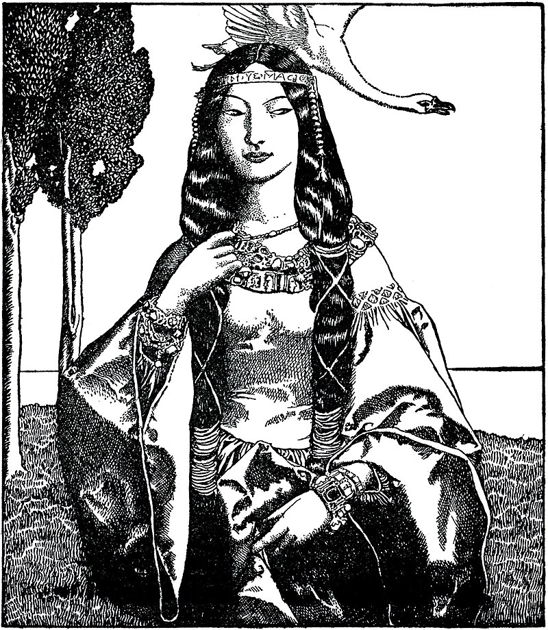

Photo: Howard Pyle, public domain via http://www.wikimedia.org
Name
Minue
Family name
Lady of the Lake
Date of birth
Early 13th century
Who am I?
I have many names. Some call me Nimue, others prefer me as Viviane or Nyneve.
Most of the people know me as Lady of the Lake. My brother was murdered by Sir Balin
and I will never forgive him. Also my greatest enemy is Merlin.
The one who has as much as pover than I have.